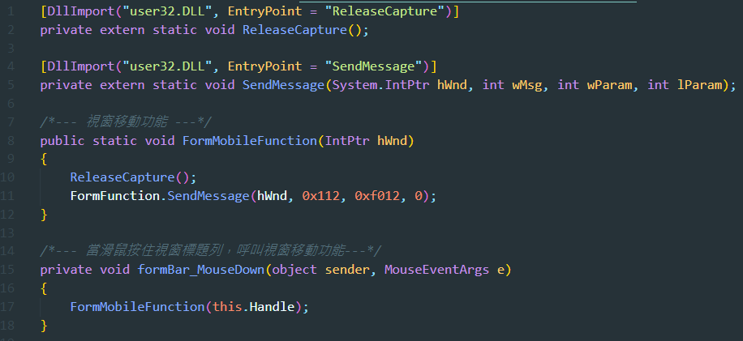

視窗移動功能
前言
因為設計上，把Form的FormBorderStyle設為none，而沒有框線和標題列，
導致視窗無法被拖移，所以要另外做一個標題列來做拖移使用。
程式碼 :

user32.dll :
1. 動態連結程式庫
(1) dynamic-link library 的縮寫
(2) 是在Microsoft Windows中實現共享函式庫概念的一種實作方式
2. 是Windows使用者介面相關應用程式接口
ReleaseCapture函式 :
1. 功能 :
(1) 釋放滑鼠捕捉
(2) 否則，無法移動視窗
參考文獻
1.
視窗移動
2.
FontAwesome.Sharp
3.
user32.dll
4.
iTextSharp
5.
Export DataGridView Data To PDF In C#
6.
C# winform 製作安裝檔
TOP